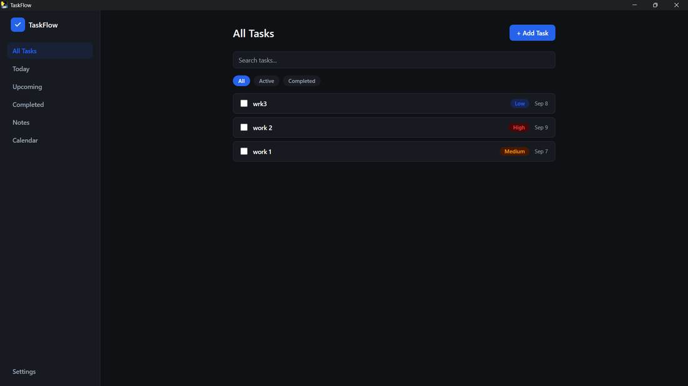
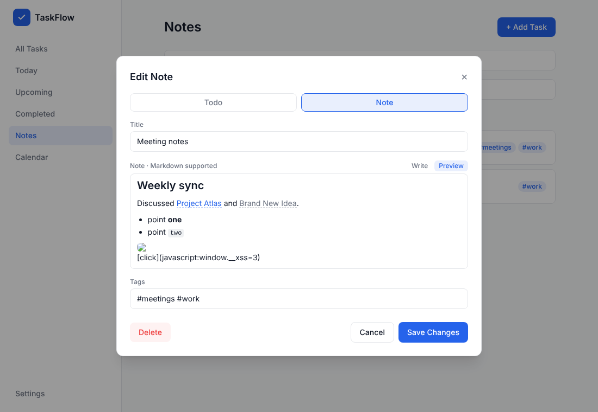
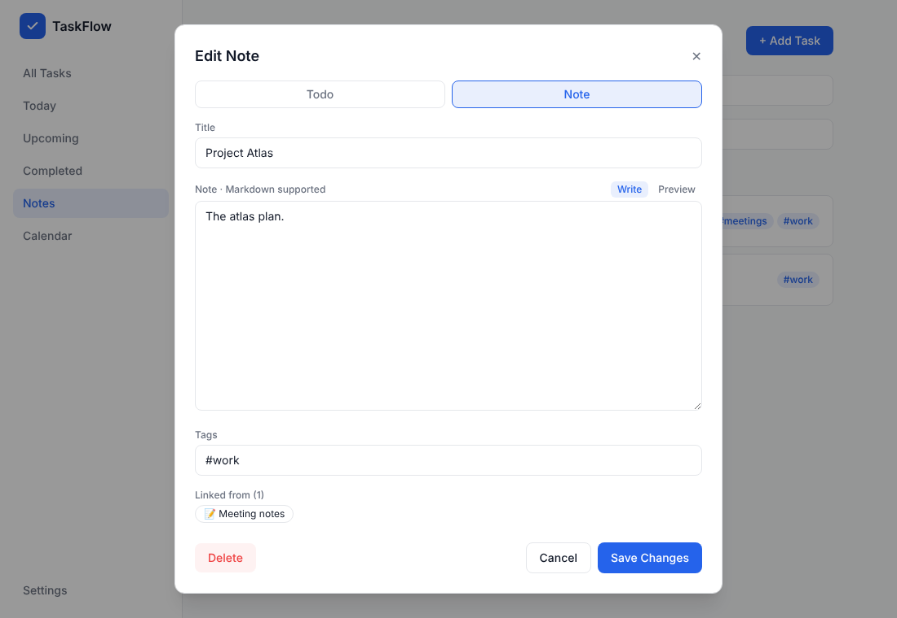
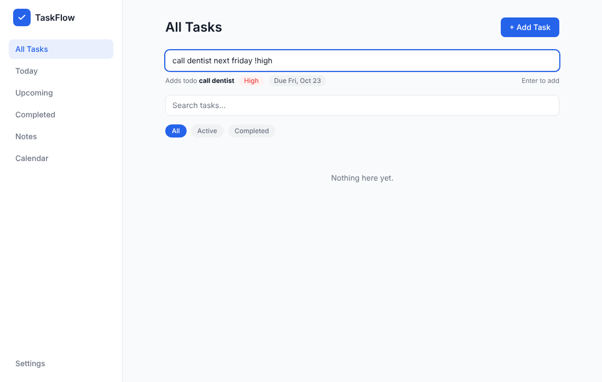
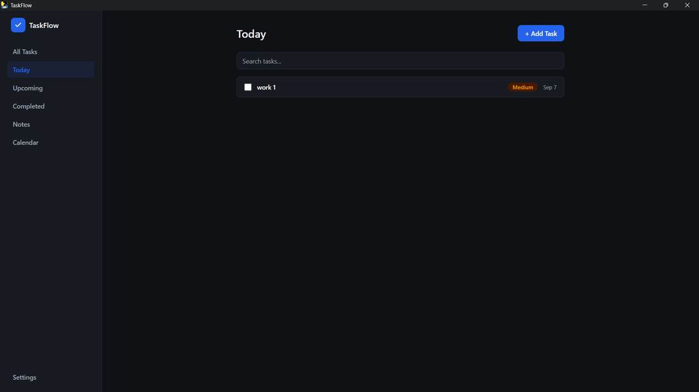
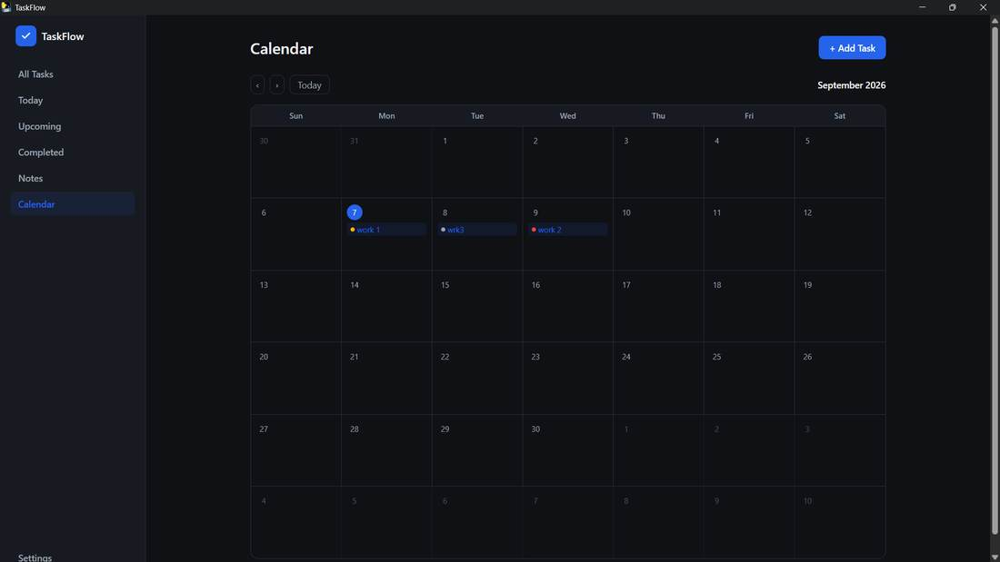
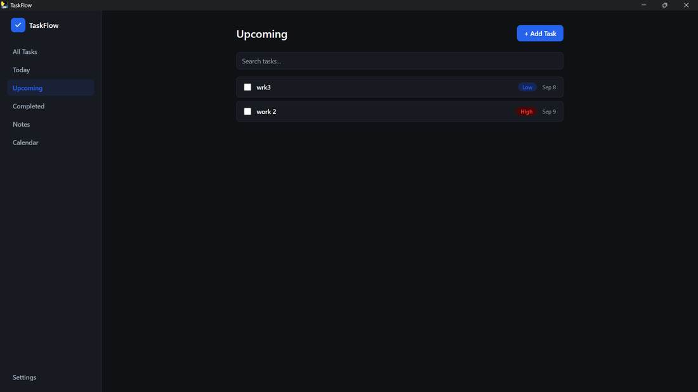
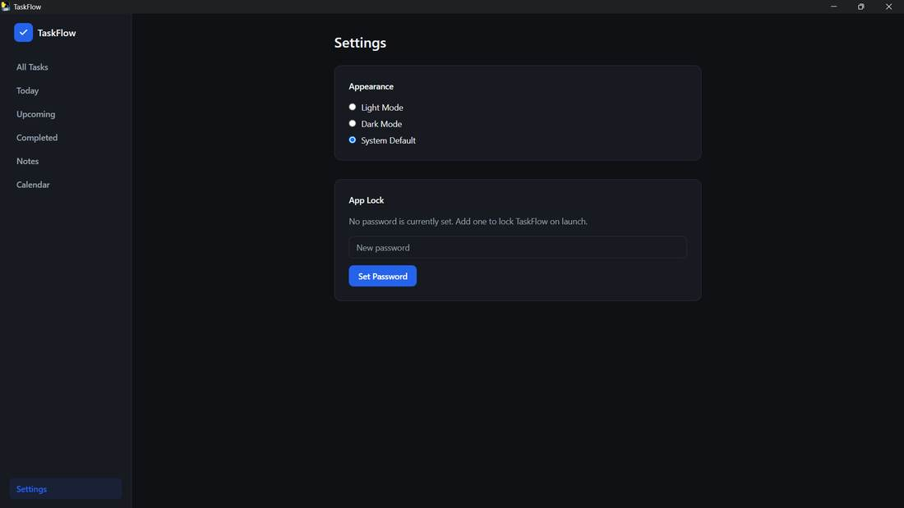

TaskFlow is a fast desktop app for the things you need to do and the things you need to remember. No account, no cloud, no tracking. Just a local database you own.

Capture, organize, act. You choose whether something is a Todo or a Note, so nothing gets guessed or reshuffled behind your back.
Your data lives in a SQLite file on your computer. It works offline and needs no sign-up.
Priorities and due dates for todos, free-form notes for reference. Convert between them any time.
Write in Markdown and connect ideas with [[links]]. See what links back, and filter everything by #tag.
Type "call dentist next friday !high" and the due date and priority are filled in for you.
All Tasks, Today, Upcoming, Completed and Notes, with live search and filters.
A monthly calendar with priority indicators. Click a day to add a todo due on it.
Optional password lock with PBKDF2 hashing and a token-protected local API, to keep casual snoopers out.
Follows your system theme, or pick one yourself.
A clean, quick layout that stays out of your way.







TaskFlow is young. Here's the direction, in rough priority order. Ideas and votes are welcome in the issue tracker.
Python 3 and Node.js are only needed to develop or build. The packaged app needs neither.
git clone https://github.com/VenkateshPanda0/notes-todo
cd notes-todo/frontend && npm install && npm run dev
# in a second terminal
cd notes-todo/backend
python -m venv .venv && source .venv/bin/activate # .venv\Scripts\activate on Windows
pip install -r requirements.txt
uvicorn app.main:app --reload